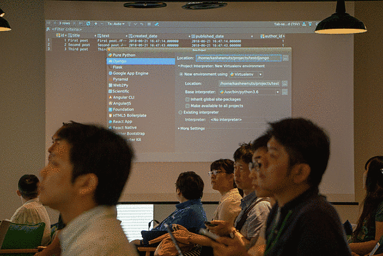

PyCon Kyushuで登壇してきました #PyCon9shu
去る6/30にLINE Fukuokaで開催されたPyCon Kyushuで登壇してきました。(本当はもっとはやくブログを書く予定でしたが7月に入り仕事が一気に忙しくなったのでゲフンゲフン)
30分というまとまった時間で、かつ誰かがモデレーターとして流れを作ってくれるわけでもない状況で登壇する機会ははじめてでしたが、発表する機会を与えてくださったことに感謝です。
イベントのURLは以下です。Togetterは探したところ見当たらなかったので作ってみました。
当日の様子をTweetとともに振り返っていきたいと思います。
フライト〜キーノートまで
https://twitter.com/kashew_nuts/status/1012806632282062848
東京は梅雨明けしていましたが、前日の九州は大雨ということで無事たどり着けるか不安でしたがなんとかアプローチ核心を超えました。
https://twitter.com/kashew_nuts/status/1012846537515257856
ちょうど祇園山笠のシーズンだったようで、迫力に圧倒されました。
https://twitter.com/kashew_nuts/status/1012856699311407104
まさかの並びに、会場入り直後にはちょっとテンション上がっていました。
https://twitter.com/kashew_nuts/status/1012864815558037505
なうとか言ってますが、このときはすでに発表のプレッシャーで緊張しておりテンパっていたのを覚えています。 「Python2時代のエンコーディング地獄」、「泡盛という飲み物を飲むとコーディング力が上がる」話が衝撃でした。
この直後スピーカーTシャツを受け取ったり、スライドを再度確認したりしていましたが、いよいよ緊張がピークでした。
発表に関して
PyCharmの便利な点、こうゆう使い方は向いてないよという点、使っているときに問題があったらどうするかなどをデモを交えながら話して来ました。
発表資料はこちらです Djangoで始めるPyCharm入門
いずれ動画が公開されるそうですが、現時点(7/15)ではまだ公開されていないようです。

発表の最中自分で時間を計るのをすっかり忘れており、タイムキーパーの方に「あと10分」の合図をされたときは「時間が足りない！」と思ったりしましたが(実は時間を計り間違えていて、残り15分あった)、途中軌道修正もしながらなんとか30分話し切ることができました。
質疑応答では予想していた通り、Community版とProfessional版の差やVSCodeとの違いについて質問されました。 期待する回答ができたかどうかはわかりませんが、少しでもPyCharmを使ってみようと思える人がいたらいいなと思います。
発表が終わった後Tweetを眺めていると概ね好評の感想が見られたので、ほっとしたのを覚えています。
反省点として英語のスライドにしておけばよかったかなーと思います。 意外と海外の方も見ていだけたりするみたいなので、次回発表する機会があれば(できる限り)英語スライドでやりたいと思います。
ランチタイム
https://twitter.com/kashew_nuts/status/1012908669955026944
午前中に発表を終えられたので、ランチタイムはリラックスしていろいろな方と話をさせてもらいました。 企業LTの時間はなぜかスプーンの話をしていたのが印象に残っています。
聴講したセッション
Introduce syntax and history of Python from 2.4 to 3.6 - slideship.com
@terapyon さんのコアPythonTalkでした。 コード例を見ながら「Pythonってこう書けるんだよ」という知識をアップデートできた時間でした。 Python3.5の @ 演算子やPython3.7のDataClassは便利そうだと感じましたし、それ以前からある機能も「なぜそれが良いのか」という知識の整理ができて非常に良かったです。
serverless framework + AWS Lambda with Python
@Masahito さんによるサーバレスフレームの話でした。 個人的にはサーバレスに関係なくあるあるネタが込められていて参考になることもありつつ、話の節々にでてくる「有名」や「好き」という単語に別の意味が込められている気がして非常に楽しい時間でした。
Artisanal Async Adventures
@ojiidotch による非同期処理がどのように動いているのかのライブコーディングタイム。みるみるうちに非同期で動くソケットプログラムができあがっていくのは圧巻でした。当日見せてくれたプログラムがどのように動くか確かめるのは宿題です。
クロージング
https://twitter.com/kashew_nuts/status/1012970841473146880
来年のPyCon Kyusuの開催場所が今年のKeynoteスピーカー @a_macbee さんから発表されました。継続していくイベントになっていくといいなーといち参加者として思いました。
懇親会<
スピーカーとして参加したおかげか、ぼっちにならずにいろいろな人と話せて楽しかったです。
何年か前からTwitterとかではつながっていたけれど、このイベントではじめてオフラインで会えた方もいましたし、 九州の方とPythonトークできたりしました。
Django ORM Cookbook というDjangoでORMを書くときに参考になりそうなドキュメントも教えていただきましたね。
https://twitter.com/shabda/status/1013468034382491649
(後日Founderの方からメンションをいただいたりして驚きました…)
最後に
東京以外でもPyConが開催される流れが続いてきて、自分も実際行ってみて楽しかったです。 機会を見つけてまたどこかのPyCon行きたいなと思いました。
最後に会場提供してくださった株式会社LINEさんをはじめ、運営・進行をしてくださったスタッフの方々、そしてスピーカーや参加者のみなさまありがとうございましたー。
Pythonプロフェッショナルプログラミング第3版 #pypro3 が出版されました
https://twitter.com/kashew_nuts/status/1004177465353179138
自分も執筆に携わった Pythonプロフェッショナルプログラミング 第3版 (略称PyPro3)が6/12に発売されました！
本の内容について
この本を一言でいうと「Pythonで仕事を進めていく上でのBeProudのノウハウを集めた本」です。 どんな内容か？何が改定されたのか？本のタイトルの意味などは、次の記事で詳しく説明されているのでそちらに譲ります。
- 「Pythonプロフェッショナルプログラミング 第3版」は、10年の取り組みの集大成 - ビープラウド社長のブログ
- 『Pythonプロフェッショナルプログラミング 第3版』6/12発売 #pypro3 - 清水川Web
一時はAmazonの開発技法ランキングで1位を獲得したようですね。
https://twitter.com/beproud_jp/status/1006447836773474304
何を担当したのか？
第6章「Git/Githubによるソースコード管理」の書き下ろし を担当しました。
書籍のレビューは何冊かかかわらせていただいたことがあるのですが、今回は初の執筆者として携わらせてもらいました。
本章の対象者
{kind=link}
本章は次のことがわかり、なにかあったときも自分で解決への道筋がわかるようにと意識して書きました。
- 混同しがちなGitとGitHubの違いをおさえる
- 聞いたことはあっても実際には使ったことのないこともある、GitのコマンドやGitHub機能がわかるようになる
- 単にコマンドや機能の紹介で終わるのではなく、どうゆうときに使えばいいのかがわかるようになる
GitやGitHubに関する書籍や情報は巷にたくさんありますが、最後の「どうゆうときに使えばいいのかわかるようになる」よう焦点を当てて書きました。 これは自分自身が入社当時GitやGitHubの各コマンドや機能を調べるときに「これ」といえる情報を見つけるのが大変だったためです。
たとえばGitやGitHubを使ってはいても、例えば個人でしか使ったことのないような状態だと、次のような状態になることがあります。というか自分が以前なっていました。
- 「ほぼgit init, clone, add, commit, push, pullしか使っていない。ブランチもmaster一本で開発。」
- 「(なんとなく)GitやGitHubは使っているけど、実はコマンドや機能の意味がわからなくて使ってない」
- 「トラブって対応が面倒なときは、GitやGitHubのリポジトリを作り直す」
- 「なぜかgit pushできないときは、とりあえず git push -f」
- 「GUIのツールでGitを使ったりはするけど、実際何をやっているのか想像がつかない」
実際に仕事でかつチームでGitやGitHubを使うようになってからはそうゆうことするわけにもいかず、BPに入ってからは改めて学び直したのを覚えています。
本章では実際に仕事で必要になるコマンドや機能、そして実際にどの場面で使えばいいのかを自身で判断できるようにポイントを詰め込んでいます。 (説明のために図やコマンドの実行例も載せた結果、PyPro3が全488ページある中で6章だけで46ページとすべての章の中で一番ページ数が多くなってしまいましたが…)
執筆を通じて
はじめの頃違いがないようにと思って書いたところがうまく伝わらない文章になっていました。今回全体のマネージメントをしてくださった@takanoryさんから、「@kashew_nutsが書いたことっぽくない。レビューアー(としての)@kashew_nutsはどうした？」とフィードバックをもらうことがありました。心にくるものがありましたが、おかげで迷いながら書いていたところも吹っ切れてかけたと思います。(その後自分で何度か書き直してしまいましたが…)
他にも執筆中プロジェクトの仕事を助けてくださったプロジェクトメンバーの方々や、レビューアーとして厳しい意見やこうしたらもっと良くなると幾度となくアドバイスしてくださって本当にありがたかったです。
ぜひ読んでいただきたいところ
全部…なのですが、特にその中でも「Part2 チーム開発のサイクル」はぜひ読んでみてほしいですね。 PyPro3は15章の項目が全4Partにまとまっていますが、Part2はチーム開発で使うツール、課題管理システム、ドキュメンテーションなど普段なんとなく使っているものでも発見があったり、考え方の基準が書いてあったりして面白いです。
最後に
Pythonに限らずシステム開発を進める上で役立つものが詰め込まれた本ですのでぜひ読んでみてください。
#djangocongress JP 2018に参加しました
Twitterのトレンド入りしてました。人気さがうかがえますね。
https://twitter.com/kashew_nuts/status/997651529040478209
オープニング
https://twitter.com/kashew_nuts/status/997643310805147649
オーガナイザーの @hirokiky のあいさつから始まりました。
https://twitter.com/kashew_nuts/status/997644167441301504
聴講したセッション
通常セッション
@tell-k「できる！Djangoでテスト!」
- どこからテストをはじめるか。フィクスチャー、モック、カバレッジとか、普段良く聞かれることをまとめたそう。
- Pylons 単体テストガイドライン http://docs.pylonsproject.jp/en/latest/community/testing.html 良さそう。
- 安定の くろのて
- 「Kent Beck のお言葉: 不安が退屈に変わるまでテストしよう」いい言葉だ
@uranusjr「Django After Web 2.0」
- 台北でDjangoGirlsの講師、macdownの作者、pipenvのメンテナなど広く活躍されている@uranusjr氏
- DRF使ってるとDjangoの役割って…となるのわかる
https://twitter.com/kashew_nuts/status/997664139202850816
この発言の温度感はセッションを聴いていた人だからこそわかる。
@thinkAmi「Django/WSGIミドルウェア入門」
WSGIやDjangoのMiddlewareを触る機会は多くないので参加。順序立てて1つずつ説明していただいたのでわかりやすかった。
@jamesvandyne「Building your MVP with Django: Lessons Learned Building and Launching a SaaS」
Django歴10年の経験から、MVP（実用最小限の製品: Minimum Viable Product）なサービスをつくってきて「こうしたほうがいいこと」「避けたほうがいいこと」を共有してもらった。そうゆうふうにも書けるのかーという発見があっていい時間でした。
写真撮影・休憩
@mamix1116 の提案で急遽行われたTweetの振り返りタイム。
https://twitter.com/kashew_nuts/status/997727347489980417
@c_bata_「Djangoの認証処理実装パターン」
- 安定のカレーメシ先輩でした。ぁっぉさん
- GitHubにサンプル置く例は見ますが、変更を見せるためにPRにしてるのはすごいなーと思った
- うっかりやってしまいそうなことや、使っていても意外と知らないことをわかりやすく話してくれていました。さすがだった。
@massa142「Django REST framework 実践入門」
https://twitter.com/kashew_nuts/status/997747587791794176
https://twitter.com/kashew_nuts/status/997746661622300672
- Serializerの基本や、DRFあるある、DRFのサードパーティツールの紹介と気になっていたことを聞けました。
- 質疑応答で「みんなDRF使っているんだな」というのと「みんな悩みどころあるんだなー」というのが感ありました。
LT
@aodag 「Python Web History」
LT基調講演(個人的に)。5分という短い時間の中であれだけの内容をしこむのはさすが。
「 Python Out Loud 」
(名前確認わすれた…) PythonのPodcastのお話。そういえば日本語のPythonがテーマのものは見当たらないなーと言う感じなので、聴いてみたいかもしれない。
@akiyoko「 Django の同人誌書いた話 」
先日の技術書典で販売された 現場で使える 基礎 Django のお話。 本の感想は 「現場で使える 基礎 Django」を読みました #技術書典 — kashew_nuts-blog で書きましたが、増版では一部書き直された箇所もあるとかでそちらも気になりますね。
@mamix1116 「 django girlsとゆかいな仲間たち 」
django girlsのチュートリアルは活用させてもらってましたが、東京だけでなく横浜, 会津と展開を予定してるらしいです。楽しみ。
サイボウズコネクト支援部からLT
- 会場提供していただいたサイボウズさんのコネクト支援部からLT
- 東京、大阪、松山と会場を提供していただいたりしてるらしい。すごい。
終わりに
Day1の後、有志で懇親会に参加したりしていました。次回開催も発表者、運営、参加者とそれぞれが楽しんでいけたらいいなぁ。 Day2のスプリントはいけなかったですが、DjangoCongressにあの場であの雰囲気をあのタイミングで参加できたのはすごく良かった。
「あればいいな」を増やしていくとやることが増えて運営が大変になってしまう印象があるので、 あれぐらいやることをシンプルにしているといわゆる「燃え尽き症候群」にもなりにくくなりそうだなと思いました。 運営に携わっている人がいるのも「あって当たり前」じゃないですしねー。
おまけ
「日本語」「少ない」「よう」とあるのが目につきました。ですが日本語の書籍もでるという話なので、今後解消されていくかもしれませんね。
https://twitter.com/kashew_nuts/status/997633371927822336